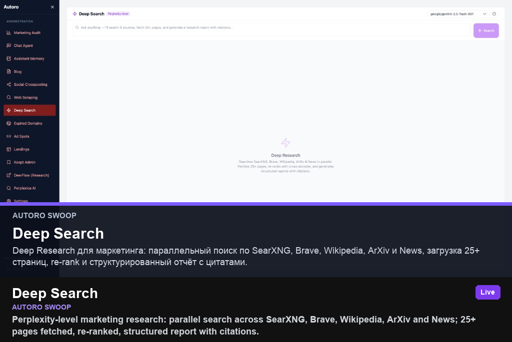

Perplexity-level marketing research: parallel search across SearXNG, Brave, Wikipedia, ArXiv and News; 25+ pages fetched, re-ranked, structured report with citations.
- Problem
- Give marketers Perplexity-grade research inside Swoop without switching tools.
- My role
- Product architecture, UI, worker pipeline, OpenRouter model routing.
- Stack
- React · TypeScript · FastAPI · deep-search-worker · OpenRouter · Gemini · SearXNG · Brave API · PostgreSQL
- Results
- Live admin module at swoop.autoro.tech; research history stored in deep_search_history.